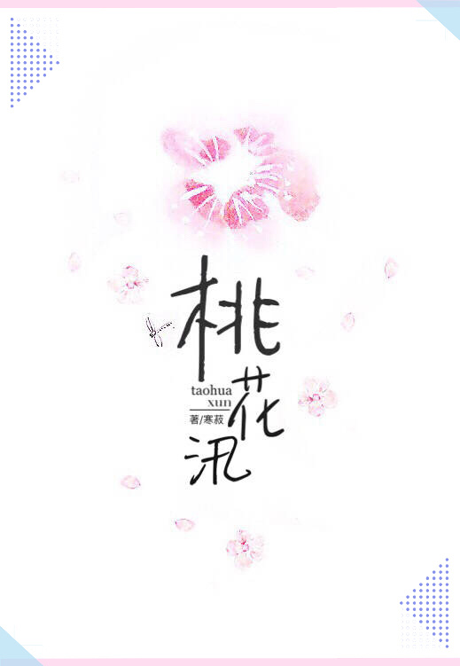

Después de recibir el diagnóstico de su enfermedad terminal, Chu Xun finalmente pudo dejarlo todo. Al fin y al cabo, lo más importante de estar vivo es la propia felicidad.
Dejar a un imbécil, vengarse de sus estúpidos colegas, despedir a su estúpido jefe, quedarse en una casa lujosa, disfrutar de un banquete y acostarse con un chico joven, enérgico y guapo: Chu Xun hizo con mucha frialdad lo que no se atrevió a hacer. ¡en el pasado!
Se gastaron todos sus ahorros y mientras se acostaba esperando su muerte, el médico le dijo en tono de disculpa: "Lo siento mucho, te diagnosticamos mal".
"..." Chu Xun se sintió débil.
Hizo otro chequeo y pensó: ¿Se sintió mal recientemente?
El médico parecía sombrío.
El corazón de Chu Xun dio un vuelco. “No me digan que, después de todo, no fue un diagnóstico erróneo. ¿Estoy enfermo?"
Médico: “Usted no tiene una enfermedad terminal, pero está… Está embarazada”.
Chu Xun: "???" Ermm, ¿es un chico?
Y más tarde, apareció el padre del niño, ese hombre joven, enérgico y apuesto, que también era un multimillonario de 26 años, Lin Yanchen, y entregó un certificado de matrimonio ya firmado por él. “Asumiré la responsabilidad. Vamos a casarnos."
Chu Xun solo se dio cuenta ahora de que su vida amorosa de 30 años de retraso, como si estuviera floreciendo, estaba inundando.